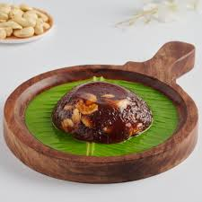

Tirunelveli Halwa 🍯

Tirunelveli Halwa also known as Wheat Halwa is a silky melt in mouth sweet.
This halwa is very popular in a city named Tirunelveli. Tirunelveli is famous for this sweet made with wheat, sugar and ghee also called as 'Irutu kadai halwa'. Tirunelveli halwa was popularised by Irutukadai Halwa, a shop opened in 1900 which sells the sweets only during twilight.
Wheat Halwa is a silky melt in mouth sweet made by simmering& stirring wheat milk with ghee, caramelized sugar & cashews. Tirunelveli Alva is a famous Wheat Halwa & the method of making it is prescribed here. Wheat Halwa is worth the effort & time for its taste.
only requires four ingredients to make- all of which you probably have in the cupboard you feel like you have won the jackpot, right?
Serving:
Ingredients
- 1/4 cup Samba Wheat
- 1/4 cup Sugar or Jaggery
- 2 tablespoon ghee
- 5 nos cashewnuts
Godhumai Halwa Making Process
-
- Step1:
- Measure and take samba wheat add water till immersing level. Soak it overnight or at least for 8hrs. Drain the water then add ½ cup water and transfer to mixer jar.
Grind it smoothly, then transfer it to a strainer.
Filter it, keep mixing and pressing it with a spoon to extract milk completely.
Grind it again with ¼ cup water to take second milk.
-
- Step2:
-
Transfer the extracted milk to a bowl and keep it undisturbed for at least 15mins. Now get ready with a heavy bottomed pan.
You can see the clear water on top, drain little of it but not fully, set aside.
Heat a tablespoon of ghee in the heavy bottomed pan.
Add the extracted wheat milk and keep stirring to avoid lumps. In few mins it will reach porridge consistency (it will coat the ladle).
At this stage add sugar, keep mixing it will again turn gooey. Keep mixing.
-
- Step3:
-
In another small kadai heat a tablespoon of ghee, fry the broken cashews until golden brown, remove the cashews. Now in the same pan with remaining ghee...
Add a tablespoon of sugar, keep mixing it in low flame. First it will change to light brown then crystallize.
Keep stirring to get a reddish golden brown color.
-
- Step4:
-
Now add this caramelized sugar to the halwa, keep mixing. It will form small crystals but keep mixing. Don't panic like me 😉 after few mins it will get dissolved.
I measured ½ cup of melted ghee and kept but did not use fully. Add a tablespoon of ghee in regular intervals, keep mixing.
Add a tablespoon of ghee and keep stirring without leaving. Do this in low flame itself.
It will nicely bubble up then slowly it will start to form a mass. Add ghee in intervals and keep stirring.
See how it rolls, at this stage it will stop absorbing ghee and will let out ghee at the sides as you can see. Now stop adding ghee. The whole mixture will dance like a jelly in the pan without sticking to the pan because of the ghee.
At this stage add fried cashews and mix well. The halwa will be glossy and dark in color, it will roll like a ball.
You can slide the pan and collect the excess ghee with a spoon if you want.
Serve Wheat Halwa hot / warm.